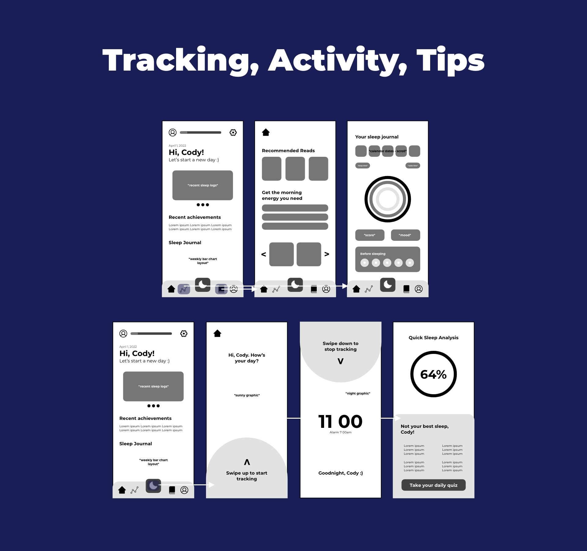
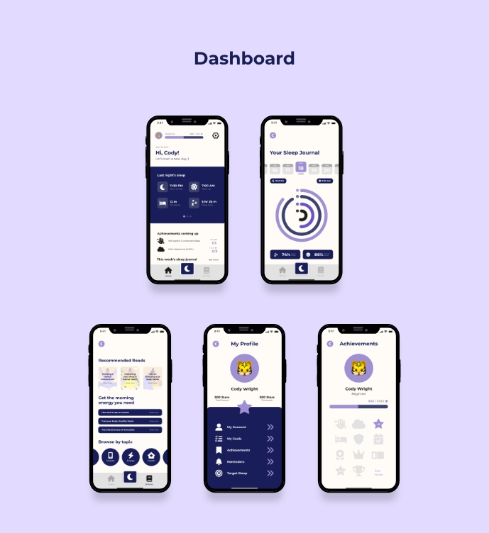

Overview
An app that helps young adults track and meet their goal of a healthy sleep lifestyle through guided tips, reminders, analyzing sleep patterns, and more.
Problem
Many young adults find dissatisfaction with their sleep, a desire to improve morning energy, and are unhappy with their overall daily routine.
Solution
Lunar interprets these problems by allowing users to monitor personal sleep statistics, earn milestone achievements towards their sleep goals, morning check-ins to observe moods, and more.
Target User
The target user consists of young adults who are somewhat technologically skilled within the realm of internet and app interfaces. Users seek a healthy way of tracking their sleep schedule and educating themselves on healthful resting habits.
Process
Research
Two apps that sparked my inspiration were Flo and MyPossibleSelf. Flo features an interactive calendar for users to set goals and task settings as well as suggestive articles corresponding to the user’s preferences. I was able to integrate this idea into Lunar's "Sleep Journal" concept through calendar-based data. The "Articles" section also echoes Flo's use of targeted readings and tips based on the goals they set in the onboarding process. MyPossibleSelf displayed an interesting approach to tracking user's daily moods and habits through brief quizzes. This inspired me to include a morning check-in once the user receives their quick sleep analysis after a night's sleep to note initial moods and information. It proved very effective in creating a personalized experience for the user.
User Interviews
Conducting user tests are an essential step in creating and designing an app for others. Cody, a third year graphic design major, was asked to navigate the onboarding process, click through a variety of screens, and complete a specified action: in this case - tracking their sleep. After completing the given tasks, Cody found the overall experience to be very smooth and engaging. A few difficulties arose in regard to page indicators within the onboarding as well as trouble understanding the bottom navigation bar. Otherwise, the elements were placed easily for Cody to locate, and felt the scattered animations throughout the interface reinforced the concept and improved the app's design and functionality.
Low Fidelity Wireframes and User Flow
Visual Design
Prototype
New users are brought through the onboarding sequence, where they are shown the highlights of what the app has to offer including the ability to feel refreshed, discover, and improve.
When entering the settings page as a new user, users are able to personalize their profile picture and update their user profile to be displayed across the app.
Users can log their sleep hours by swiping up to begin tracking at bedtime. When waking up, the user is able to swipe down and end tracking to show their quick sleep analysis for the night. A morning check-in quiz follows to note the user's experience overnight, rewarding them with daily stars to add to their personal achievements.
Reflection
Challenges
A considerable difficulty throughout this project was the overall scope. Due to the concept of the app and the features I chose to include, the project required a lot of time and effort to complete. Some aspects had to be scratched from the initial design to focus on the more important areas and develop them further. Another challenge was working with an idea I have never implemented before. It consisted of a good deal of research to learn the positive and negative design elements within a sleep tracking app. With that, I was able to incorporate details from various apps to fit a simplified and effective user experience.
Successes
Looking at the final product, I'm very satisfied with the interface and functionality of the app. Being able to navigate through it and experience the feel of the user first-hand was exciting, needless to say. The overall theme is bold, colorful, and consistent, which helps to distinguish it from the plethora of standard sleeping apps available to download. My favorite aspect of the app has to be the onboarding process. The screens flow together nicely and it isn't too overwhelming when first entering the app. Lunar presents strong visual aesthetics and an engaging experience for the user.